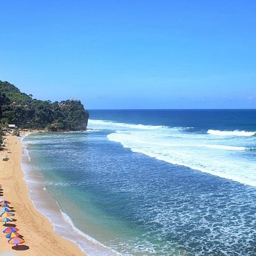

Eksotisme
Gunung Kidul

Pantai Gunung Kidul
Keindahan Gunungkidul terletak pada keanekaragaman wisata alamnya,
meliputi pantai-pantai berpasir putih yang indah, formasi karst yang unik,
gua-gua alami yang memesona, serta perbukitan yang menawarkan pemandangan
spektakuler seperti Gunung Api Purba Nglanggeran. Selain itu, Gunungkidul
juga menawarkan pengalaman wisata budaya melalui situs-situs sejarah,
kuliner khas seperti walang goreng, serta destinasi wisata religius yang
menambah kekayaan objek wisatanya.
Pantai buka 24jam sehari
- Pantai Slili: Buka 24 jam sehari.
- Pantai Wediombo: Buka 24 jam sehari.
- Pantai Butuh: Buka 24 jam sehari.
- Pantai Midodaren: Buka 24 jam sehari.
- Pantai Ngrumput: Buka 24 jam sehari.
- Pantai Ngobaran: Buka 24 jam sehari.
- Pantai Kukup: Buka 24 jam sehari.
Pantai Dengan Jam Operasional Terbatas
- Pantai Indrayanti: Umumnya ramai dari pukul 07.00 hingga 18.00 WIB.
- Pantai Krakal: Jam buka mulai pukul 08.00 WIB.
- Drini Park: Buka pukul 09.00 WIB dan tutup pada pukul 06.00 WIB (di hari berikutnya).
- Jungwok Blue Ocean: Buka dari pukul 09.00 WIB hingga 20.00 WIB (weekday) dan 21.00 WIB (akhir pekan).